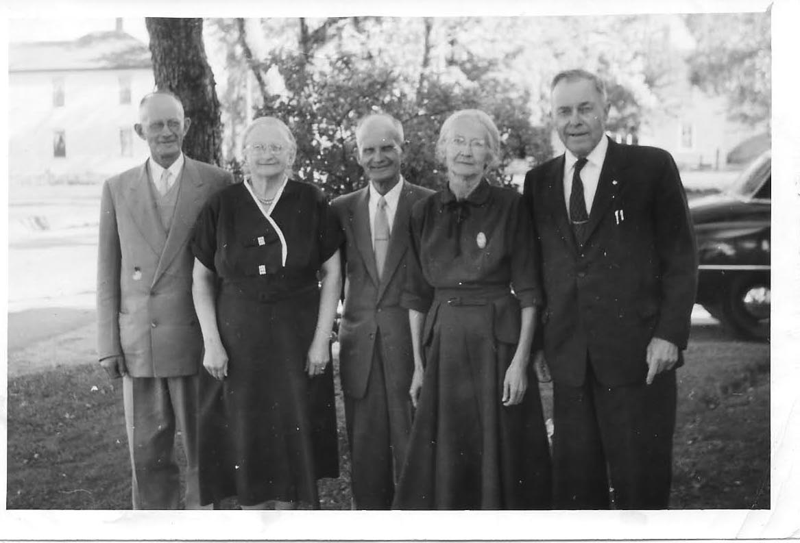
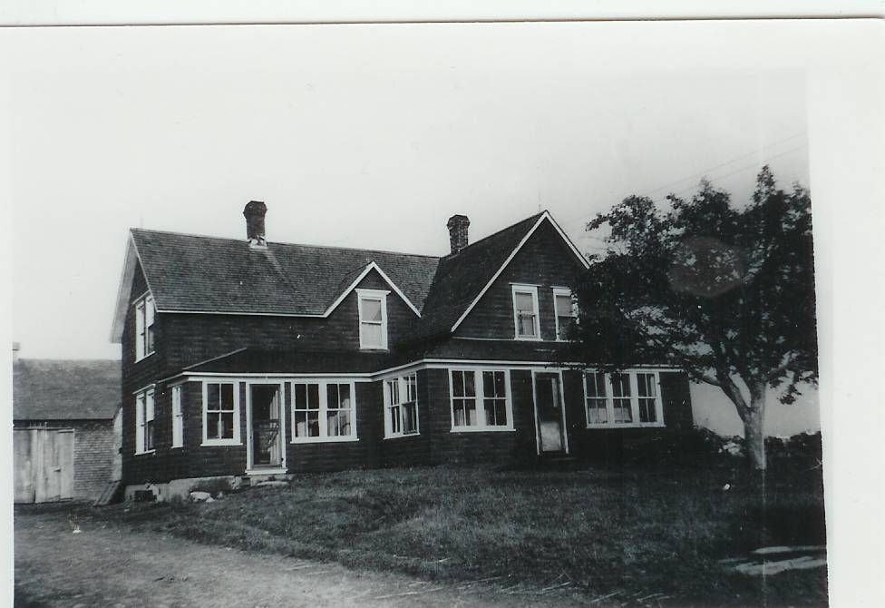
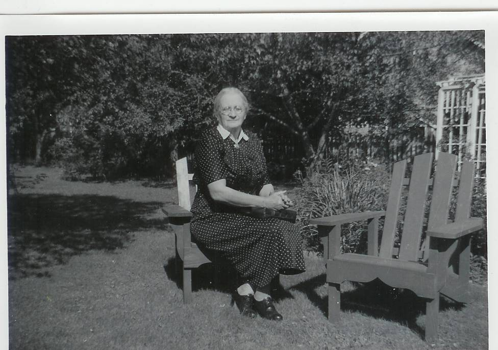
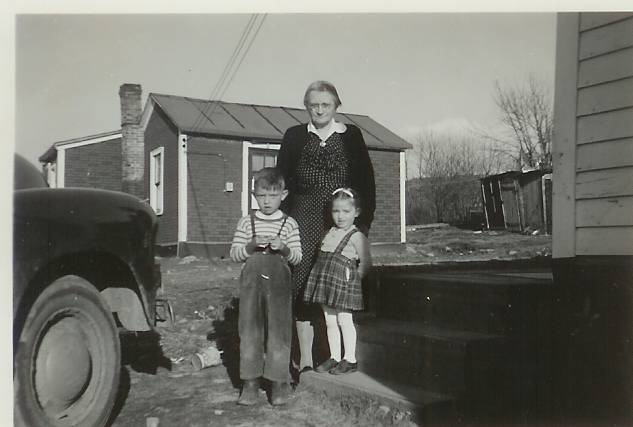
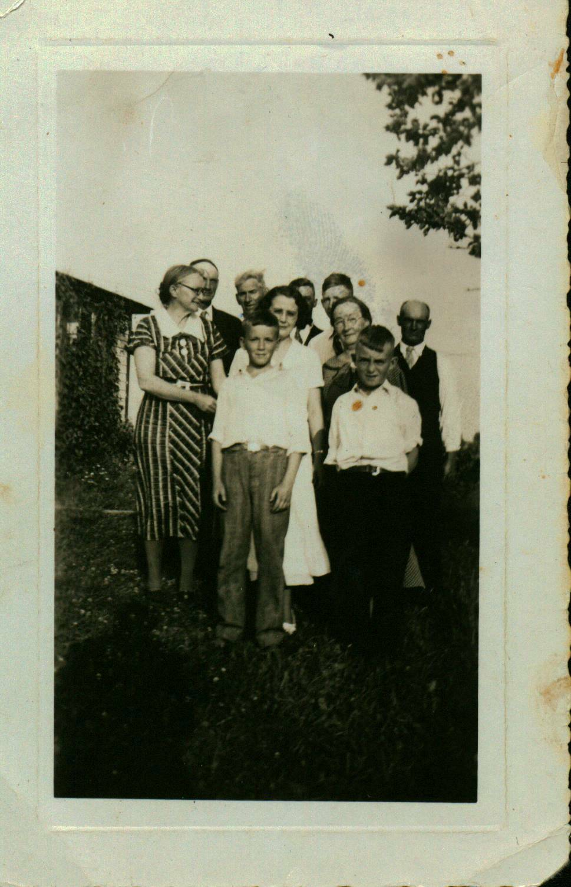

Glendenning Family Memories
After 28 years of marriage, Jane Elizabeth Jardine (Watling) became a widow in 1939; she was 48 at the time. The two oldest daughters, Grace and Venetia, were married and living elsewhere; her daughter, Lillian, was living and working in the Boston area. Elinor and the five boys, the youngest being nine years old, were living at home.
The next decade, the wartime years, brought a number of significant changes to the community. The commencement of classes, and the construction of the Miramichi Rural High School, allowed young people of the community to continue their schooling to the end of high school while continuing to live at home; before this, the nearest high school was in Loggieville, eleven miles away. The looming war resulted in the construction of an airbase at Chatham, a radar station at St. Margaret’s, and a bombing range on the road to Loggieville. These developments meant a significant growth of non-farm jobs for the community. The outbreak of hostilities also soon resulted in sons, sons-in-law, neighbours, relatives and friends entering the armed forces. The decade also brought improved roads, regular bus service to Chatham and electric lights. By the end of the decade, Black River had moved from a barter to a cash economy.
Although the sons continued to operate the family farm for the next decade, the decade also brought significant changes to the family; Walter finished building his house on the Dan MacLean property, married and moved out; Lillian returned to New Brunswick and married; Elinor, Kenneth, Norman and Don attended the new Miramichi High School; Walter, Kenneth and Norman served in the armed forces; John, after operating the farm during the war, married, built a house and moved to the Bob MacLean property; Elinor married and moved out; Kenneth returned from military service, married and moved away; Don finished high school and entered teaching; Norman married and settled on the home place.
Mother continued to be active in the community generally and encouraged her family and others to do the same. She was especially active in her church, the Women’s Missionary Society, the Presbyterian League and the Women’s Institute. She believed in education and supported the construction of a high school for the area; she also encouraged her family and others to continue their schooling. (It is interesting to note that the Miramichi Rural High School was the first rural high school in the Province; immediately following WW2, the number grew rapidly with, I believe, federal financial support, until there were approximately 50 rural high schools throughout the New Brunswick.)

Thanks to Tina Newton for this photo of “The Watlings 5”: James A., Jane (Glendenning), Ernest, Janet (Godfrey) and George. Date uncertain but probably mid-1950’s.
Norman and Jean married in 1951 and Mum continued to live with them until she died in 1964. Mum died in the Miramichi Hospital of cancer of the pancreas having been in the hospital only about two weeks.
The following vignettes are intended to round out the picture of Mother, her interests, activities and passions:
While discussing VE Day with Vance MacNaughton in June of 1995 at the shopping mall in Douglastown, he told Ken and I about his memory of VE Day (May 8, 1944). As readers will know, the Little Branch School was down the road and across the brook from home. Vance was a student in the school at the time when, suddenly, there was a knock and, without waiting for a response, the door flew open the school door flew open and Mum announced to teacher and students alike "The War is over".
Mother had no formal training as a nurse but made herself available and was frequently called upon by others in the community in time of need such as for a birth or death in a family.
Mother always took the lead role in the washing of the wool and trading it for yarn. After the snow and ice disappeared but before the grass grew, it was necessary to wash the wool. It was a major undertaking.
In preparation for washing, rainwater was saved in large tubs and buckets. Rainwater was used because it was softer than water from the well thereby using less soap but more important, resulting in cleaner wool; in addition, without electricity, water would have had to be pumped by hand. Also, a bench was set up in the front yard to hold the tubs. In addition, The bags of wool were opened and the real dirty parts were snipped off and discarded.
The water was heated on the kitchen stove, carried to the yard, and then the wool was washed and rinsed several times. Once Mum was satisfied that the wool was clean, thin swatches were spread on the grass to dry. The clumps were small and kept thin so that they would dry quickly. The wool would be left over night, or perhaps over a couple of nights, to dry then gathered up and bagged. Leaving the wool too many days spread out on the grass resulted in the wool settling down into the grass and, therefore, being difficult to gather and bag when dry.
The bags of dry, clean wool were loaded into the Model A Ford and taken to Brown’s Woolen Mills in Nelson where it would be converted into yarn. I was there only once but I remember the big machines and the noise. Brown’s had, I believe, the only woollen mill on the Miramichi at that time. Negations were based on the weight of the wool. One could (1) get one’s own yarn back after it was converted into yarn by paying the cost of processing but that meant a return trip to pick up your yarn. (2) One could get an equal amount of yarn, but not your own, on the day you took your wool to the mill provided you paid for the processing. What Mother usually did, in effect, was to sell her wool to the mill, purchase the number of skeins and colours of yarn she wanted, and pay the difference in cash.
Mum usually had more wool than she needed, so she sold some to neighbours and, I think, she had some customers by mail.
Mother, like other mothers in the community, knitted all our socks, mitts and sometimes sweaters. She could knit a pair of mitts or socks in a day or two and usually knitted while resting, visiting or talking with family in the evening. She often knitted socks or mitts for relatives or friends as Christmas gifts. The men wore heavy woollen sock both summer and winter; I cannot remember when I had my first pair of “store-bought socks.
Bread was a staple and a large family required many loaves of bread each week. The recipe was mixed in a large, round blue-enamelled, bread pan. A cake of Fleischmann’s yeast was “started” in a cup of warm water. The dough was made into loaves, set in a warm place to rise, and then put in the oven to bake. My recollection is that she would make 7 loaves at a time twice a week. Often of an evening when Mother went off to a Missionary meeting, I was left to keep the fire going and bake the bread.
Mother loved to have visitors. There were a half-dozen at every meal and putting up a meal for 15 after church on Sunday, or any other day, did not faze her a bit or if it did, she did not let on. I cannot ever even once remember her saying, I wish they hadn’t or wouldn’t come today. Meals were not fancy but they were always tasty. Of course, when the visitors were family, the daughters or daughters-in-law, pitched in to help.
Oil lamps were tended early each day so that, when night fell, there was no scramble for a light. We had three oil lamps plus, in later years, an Aladdin lamp. Lamps were filled with kerosene, wicks were trimmed, globes were wiped first with an old newspaper to remove the soot, then washed, dried and replaced. When finished, the kerosene lights were placed on a shelf beside the clock high on the kitchen wall. The Aladdin lamp used gas, naphtha?, and did not require such daily care.
Securing food for the coming winter was a major concern in a household. While Mother had no special role in the planting or harvesting, she played the major role in pressuring food for winter. The first step was to have a good garden, which resulted in potatoes, carrots and turnips stored in bins in the basement. Carrots were a bit more complex and were usually stored in sand in the basement. Apples were stored in a cold bedroom, usually the large bedroom over the driveway. Some preserves were put up – peaches, cucumber pickles, chow and mustard beans. Several baskets of peaches were purchased and these were bottled along with some strawberries, blueberries and maybe even raspberries.
The advent of the home canner gave a new twist to preserving – that of canning. Boxes of empty cans and covers were purchased, after sterilizing the cans, peas and beans blanched and packed into the cans. The cans were then sealed and boiled for a couple of hours in a barrel or huge pot over an open fire. Then they were cooled quickly, labelled and stored for the winter. If the ends of cans did not snap back when cooled, those cans were considered unsafe and opened immediately
In reporting her death, the Chatham Gazette noted, “she took a keen interest in community activities and was especially interested in education.” At her death, the remaining property passed to her son, Norman.




Don
Glendenning